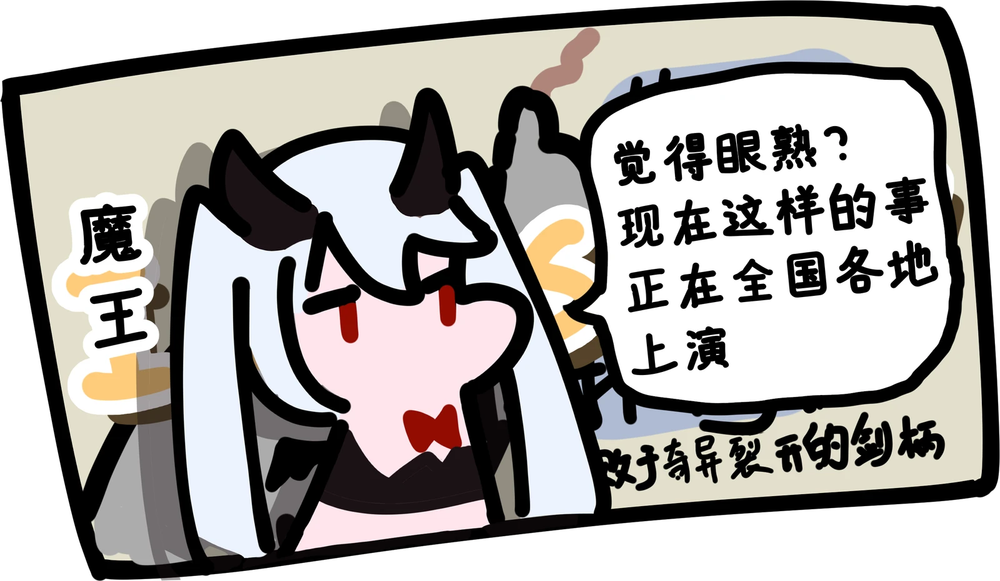
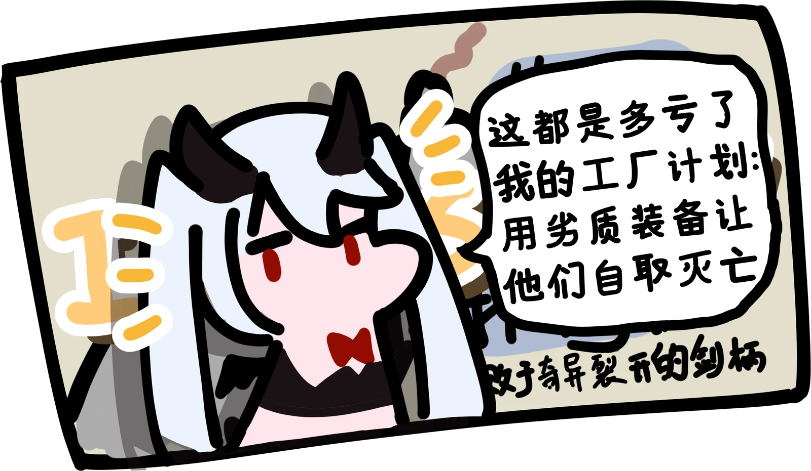
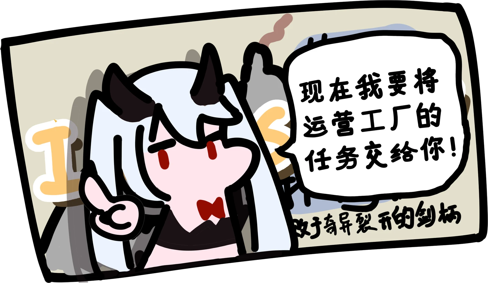
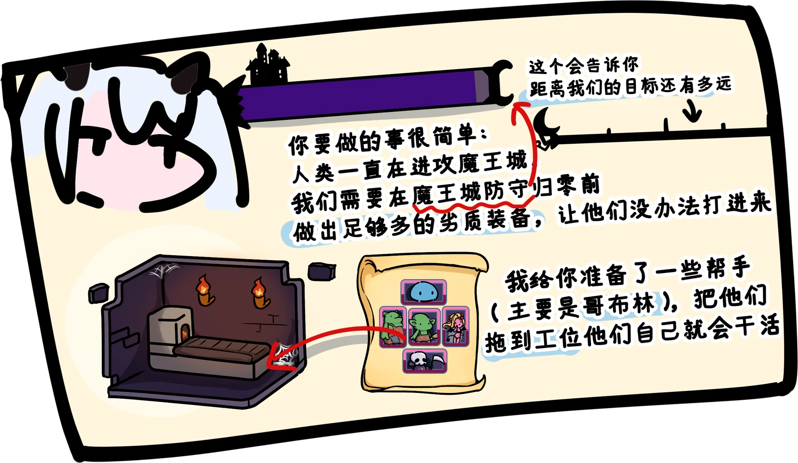
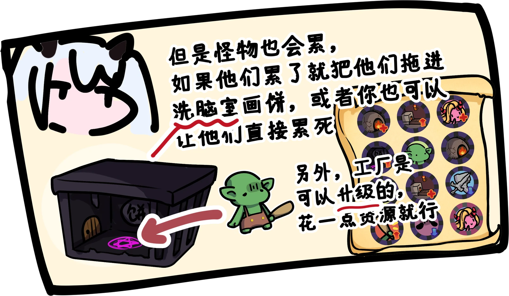
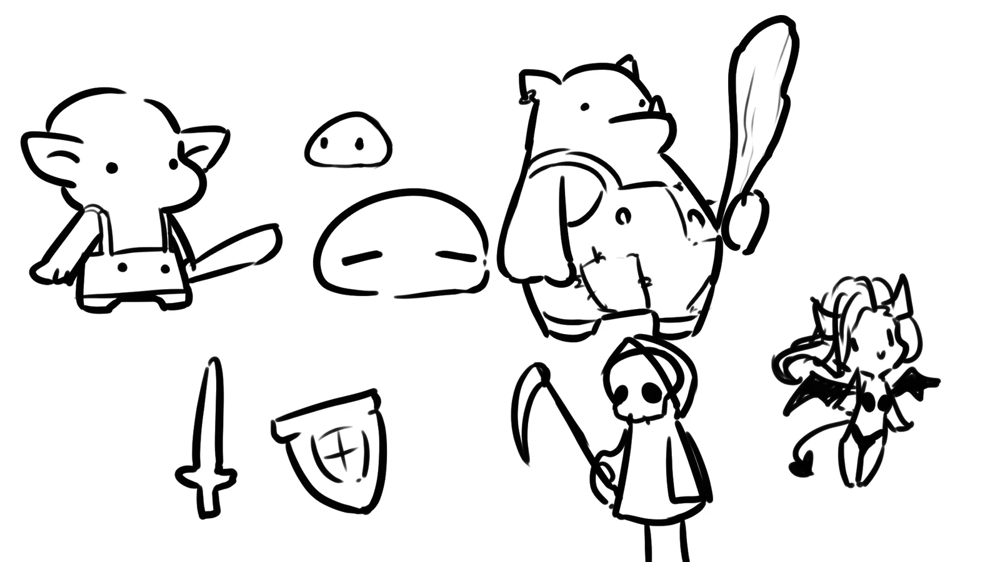
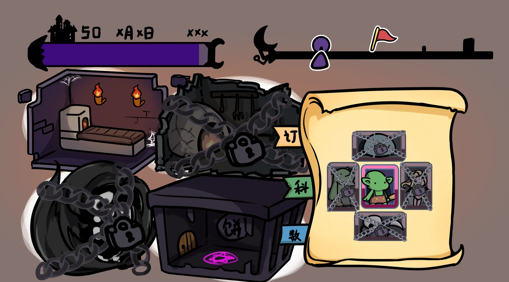

魔王把工厂交给你
你将成为魔王麾下的怪物黑心工厂厂长。魔王的计划是把劣质装备送到勇者手里，让他们难以攻进魔王城。


扮演魔王麾下的怪物黑心工厂厂长，生产劣质装备来拖垮勇者。

你将成为魔王麾下的怪物黑心工厂厂长。魔王的计划是把劣质装备送到勇者手里，让他们难以攻进魔王城。


把怪物拖到工位上，它们就会开始生产。你需要在魔王城防守归零前做出足够多的劣质装备，拖垮不断进攻的勇者。


怪物疲惫时，可以把它们拖进洗脑室“画饼”；也可以让它们继续工作直到累死。消耗资源升级工厂，继续完成魔王的生产任务。

腾讯游戏高校极限开发赛事作品，开发时间为 72 小时。
在四人团队中担任美术与策划。下方展示怪物角色、教程与结局牌子、界面素材及设计草图。


